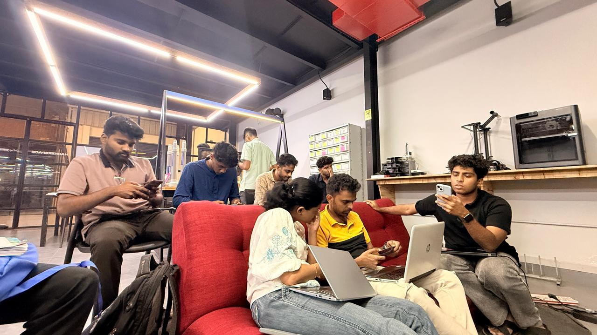

AI Wednesday 03 : VL-JEPA- Vision Language Joint Embedding Predictive Architecture
Overview
This week’s AI-Wednesday we focused on VL-JEPA, a new kind of vision-language architecture and how it differs from the vision-language models (VLMs) most people are familiar with.
We started by explaining what VLM and VLA models are and how they generally work, so everyone could get a basic understanding first. Then we moved into VL-JEPA, its main idea, and why it works differently from traditional models. We also discussed how this approach can be useful for robots and real-world tasks. The session was very curious and interactive, with some great discussions.
Topics
Traditional Vision-Language Models (VLMs):
- We kicked off by revisiting how standard vision-language models work, especially models that process images and text together and generate text token by token, to ensure everyone understood the baseline architecture and limitations
Introducing VL-JEPA & Joint Embedding Predictive Architecture:
- We then explored VL-JEPA’s core idea: instead of autoregressive token generation, it predicts continuous semantic embeddings in a shared latent space. This enables stronger performance with fewer parameters and better efficiency on tasks like classification and retrieval.
Real-World Impacts & Robotics Relevance:
- Finally, we discussed how VL-JEPA’s non-generative, predictive design could be especially valuable in robotics and embodied AI enabling systems to anticipate meaning and actions from sensory data rather than just generating descriptions, which could make perception and decision-making workflows much more efficient on robots.
Photos

Highlights
- One key takeaway from the session was understanding how VL-JEPA predicts meaning instead of tokens like other traditional models.
Next Week
- Topic: Intro To Edge AI
- Host: Sebin Thomas